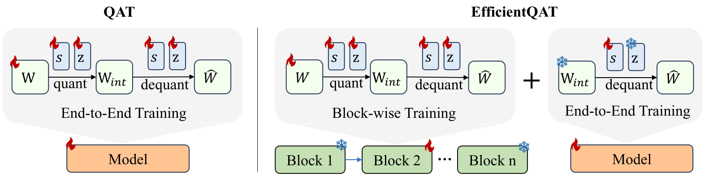
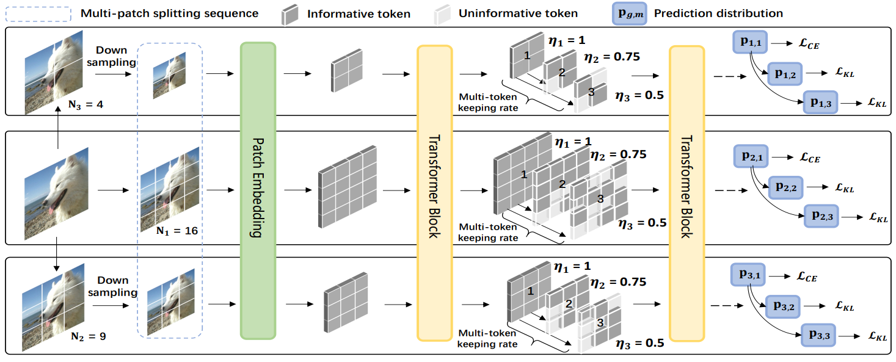
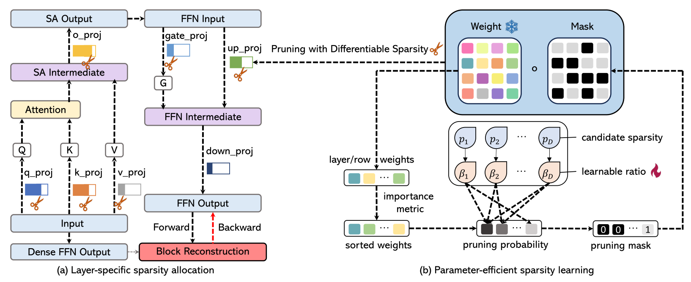

|
|
About Me [back top]
I am currently an incoming Ph.D. student in the University of Hong Kong, fortunately supervised by Prof. Ping Luo at the MMLAB@HKU. Earlier, I received the master and bachelor degree from MAC@XMU, Xiamen University, and advised by Prof. Rongrong Ji.
My research interests are to develop efficient models, including both vision and language models. Recently, I focus on develop quantization algorithm for Large Language Models (LLMs). Fell free to contact me for any problem or collaboration.
Latest News [back top]
- 1/2024: Two paper are accepted by ICLR 2024, including one Spotlight
- 7/2023: Two paper are accepted by ICCV 2023
- 7/2023: One paper is accepted by IJCV
- 11/2022: One paper is accepted as oral presentation by AAAI 2023
Publications [back top]
Preprint
|  | Mengzhao Chen, Wenqi Shao✉, Peng Xu, Jiahao Wang, Peng Gao, Kaipeng Zhang, Yu Qiao, Ping Luo✉
EfficientQAT: Efficient Quantization-Aware Training for Large Language Models [arXiv] [code] [中文介绍] |
Journal
|  | Mingbao Lin*, Mengzhao Chen*, Yuxin Zhang, Ke Li, Yunhang
Shen, Chunhua Shen,
Rongrong Ji, Liujuan Cao✉
Super Vision Transformer International Journal of Computer Vision (IJCV), 2023 [arXiv] [code] (* Equal Contribution) |
Conference
 |
Wenqi Shao*,Mengzhao Chen*, Zhaoyang Zhang, Peng Xu, Lirui Zhao, Zhiqian Li, Kaipeng Zhang, Peng Gao, Yu Qiao, Ping Luo✉
OmniQuant: Omnidirectionally Calibrated Quantization for Large Language Models International Conference on Learning Representations (ICLR, Spotlight), 2024 [arXiv] [code (600+ stars)] [中文介绍] (* Equal Contribution) |
| Mengzhao Chen,Wenqi Shao✉, Peng Xu, Mingbao Lin, Kaipeng Zhang, Fei Chao, Rongrong Ji✉, Yu Qiao, Ping Luo
DiffRate : Differentiable Compression Rate for Efficient Vision Transformers International Conference on Computer Vision (ICCV), 2023 [arXiv] [code] [中文介绍] [直播回放] |
|
| Mengzhao Chen, Mingbao Lin, Zhihang Lin, Yuxin Zhang, Fei Chao, Rongrong
Ji✉
SMMix: Self-Motivated Image Mixing for Vision Transformers International Conference on Computer Vision (ICCV), 2023 [arXiv] [code] |
|
| Mengzhao Chen, Mingbao Lin, Ke Li, Yunhang Shen, Yongjian Wu, Fei Chao, Rongrong
Ji✉
CF-ViT: A General Coarse-to-Fine Method for Vision Transformer AAAI Conference on Artificial Intelligence (AAAI, Oral), 2023 [arXiv] [code (100+ stars)] [中文介绍] |
|
|  | Peng Xu, Wenqi Shao✉,Mengzhao Chen, Shitong Tang, Kaipeng Zhang, Peng Gao, Fengwei An, Yu Qiao, Ping Luo✉
Besa: Pruning large language models with blockwise parameter-efficient sparsity allocation International Conference on Learning Representations (ICLR), 2024 [arXiv] [code] |
| Yunshan Zhong, Mingbao Lin, Mengzhao Chen, Ke Li, Yunhang Shen, Fei Chao,
Yongjian Wu, Rongrong Ji✉
Fine-grained Data Distribution Alignment for Post-Training Quantization European Conference on Computer Vision (ECCV), 2022 [pdf|supp] [arXiv] [code] |
Major Awards [back top]
- Outstanding Graduate Student, Xiamen University, 2024
- National Scholarship, Ministry of Education of China, 2023
- Outstanding Graduate Student, Xiamen University, 2021
Academic Service [back top]
- Reviewer of TPAMI, IJCV, TMLR
- Reviewer of NeruIPS, CVPR, ECCV, CPAL